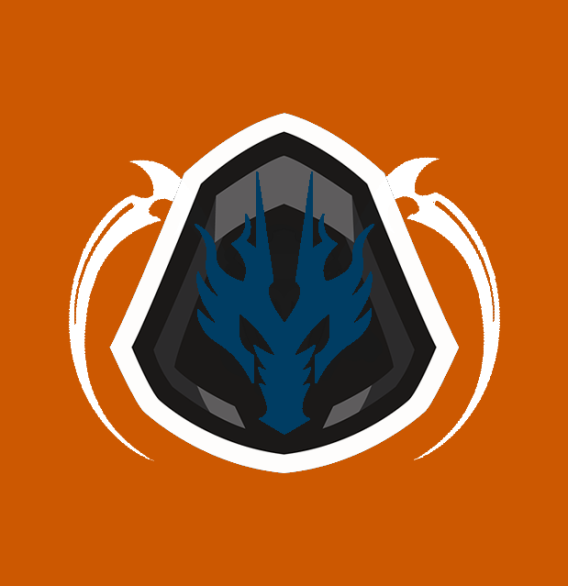

<header>
  <mat-toolbar class="top-nav-toolbar">
    <mat-toolbar-row color="secondary">
      <a routerLink=""></a>
      <a routerLink="" style="text-decoration: none;">
        <span>
          <h5>Dread Fall</h5>
        </span>
      </a>
      <!-- This fills the remaining space of the current row -->
      <span class="top-nav-bar"></span>
      <span *ngIf="authorizationService.getRole() === 'ADMIN'">
        <button mat-icon-button color="accent" matTooltip="Create news story." matTooltipPosition="before"
          (click)="openCreateDialog()">
          <mat-icon>create</mat-icon>
          <!-- <mat-icon class="create-news-icon">create</mat-icon> -->
        </button>
      </span>
      <span *ngIf="authorizationService.isUserLoggedIn()" class="username-span">
        <h3>{{ authorizationService.getUsername() }}</h3>
      </span>
      <span *ngIf="!authorizationService.isUserLoggedIn()">
        <button mat-stroked-button (click)="openLoginDialog()">Login</button>
        <button mat-button color="accent" (click)="openSignupDialog()">Sign Up</button>
      </span>
      <span *ngIf="authorizationService.isUserLoggedIn()">
        <button mat-stroked-button (click)="logout()">Logout</button>
      </span>
    </mat-toolbar-row>
  </mat-toolbar>
</header>